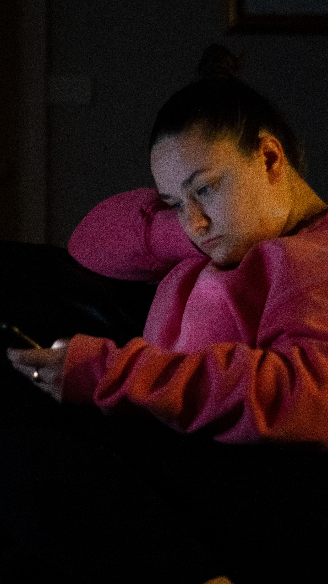

Covid lockdowns have been rough, and we've all needed things to distract ourselves from the fact that we're all stuck inside, and can't see our friends or go out and see the world. I'm lucky that I've had a partner by my side through all of it, but I've also needed some creature comforts, like my record player to make it through. This series aims to show what lockdown is like, and how I've tried to get through it, with piles of records, and long naps. I used all natural lighting for this series, and often made the photos feel warmer. For framing I used various techiques to get interesting shots. I also originally tried to go to grazeland to attempt to get a series of photos, but I felt it was too staged, so went back to the drawing board. I tried to either take photos candidly, or make them look as natural as possible.
Supporting Documention